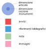

Anno
2020
Lingua
Numero di abitanti
Ordina per
Come leggere la visualizzazione
La visualizzazione mostra la media dei parametri degli articoli sui comuni aggregati per regione. I cerchi, in alto, rappresentano la dimensione degli articoli. Le barre rappresentano invece il numero medio di avvisi, referenze, note e immagini per articolo.
Scegli dal menu in alto la lingua degli articoli, il numero di abitanti e l'ordine di visualizzazione per ottenere maggiori informazioni.
